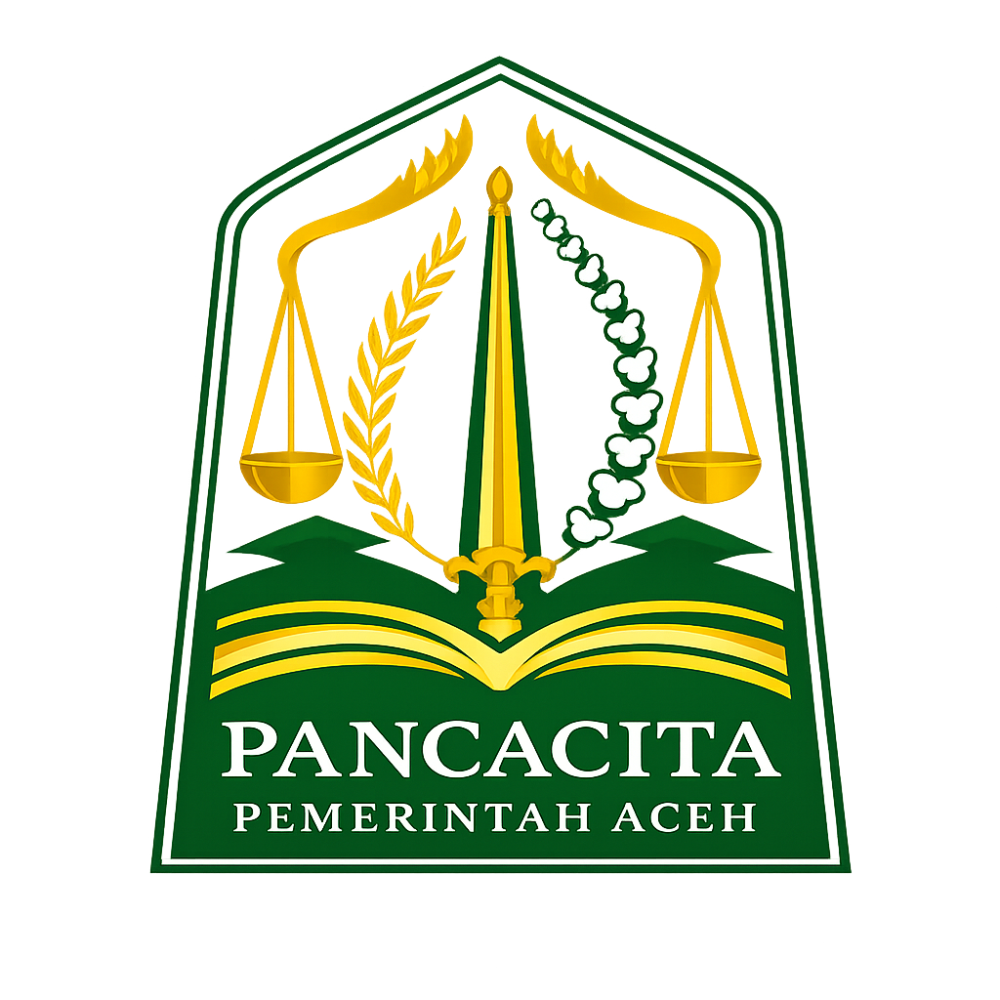

SIGAP HUTAN
Sistem Informasi Gangguan, Aduan, dan Pelayanan Kehutanan Terpadu
UPTD Kesatuan Pengelolaan Hutan Wilayah VIII Aceh

UPTD Kesatuan Pengelolaan Hutan Wilayah VIII Aceh
Laporkan kebakaran hutan, perambahan, pembalakan liar, dan gangguan lainnya.
Sampaikan pengaduan atau aspirasi kepada UPTD KPH Wilayah VIII Aceh.
Informasi pelayanan kehutanan kepada masyarakat.
Informasi wilayah kerja UPTD KPH Wilayah VIII Aceh.
Kegiatan patroli rutin dalam menjaga kelestarian kawasan hutan.
Penyuluhan kepada masyarakat tentang pentingnya menjaga hutan.
Penanaman pohon untuk pemulihan kawasan kritis.